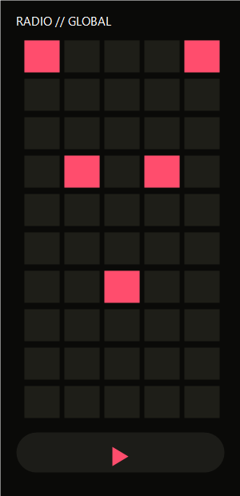

Free & open source • No account • No ads
Wavz streams 50,000+ live radio stations from every corner of Earth — wrapped in an interactive 3D globe you can spin, zoom, and tap to listen.
v0.1.0 • arm64-v8a • min SDK 24 • targeted at Android 16 (API 36) • Signed & verified

50,468
Radio stations indexed
188
Countries covered
6
Continents represented
4
Radio-Browser mirrors
Why Wavz?
A free alternative to TuneIn, built for speed and privacy. No subscriptions, no tracking, no login.
Spin the Earth, zoom into any region, and tap a colored dot to start listening instantly. Stations are plotted by real GPS coordinates.
Refresh from all 4 Radio-Browser mirrors every day. Streams connect directly to broadcasters over HTTPS.
Full FTS5 search index kept locally in IndexedDB / SQLite. Browse and search even when you're offline.
If a stream hiccups, Wavz silently retries 3 times before giving up. You never tap twice.
Auto-stop after 15 / 30 / 60 minutes. Perfect for drifting off to your favorite late-night station.
Filter 50,000 stations by name, country, city, tag, or language in under 50 ms — powered by a dedicated web worker.
Android only (for now)
No Google Play review yet, but installing manually is safe and easy.
Tap the download button above. The file is 17.8 MB and min SDK is 24 (Android 7.0+).
Chrome will prompt you to allow installs. The setting is stored per-app, so it only affects this APK.
Tap the downloaded file in your notifications, then tap Install. First launch will sync the 50K station catalog.
Note: The APK is signed with our release key and verified with apksigner verify. Same signature → future updates install over the top without data loss. Never install APKs from third-party "mirror" sites — only download from the official GitHub release link above.